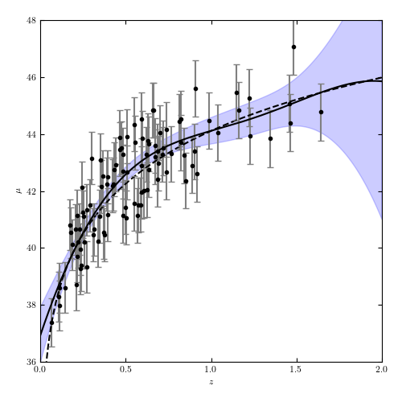

Cosmology Regression Example¶
Figure 8.11
A Gaussian process regression analysis of the simulated supernova sample used in figure 8.2. This uses a squared-exponential covariance model, with bandwidth learned through cross-validation.
{kind=link}
# Author: Jake VanderPlas
# License: BSD
# The figure produced by this code is published in the textbook
# "Statistics, Data Mining, and Machine Learning in Astronomy" (2013)
# For more information, see http://astroML.github.com
# To report a bug or issue, use the following forum:
# https://groups.google.com/forum/#!forum/astroml-general
from __future__ import print_function, division
import numpy as np
from matplotlib import pyplot as plt
from sklearn.gaussian_process.kernels import ConstantKernel, RBF
from sklearn.gaussian_process import GaussianProcessRegressor
from astropy.cosmology import LambdaCDM
from astroML.datasets import generate_mu_z
# ----------------------------------------------------------------------
# This function adjusts matplotlib settings for a uniform feel in the textbook.
# Note that with usetex=True, fonts are rendered with LaTeX. This may
# result in an error if LaTeX is not installed on your system. In that case,
# you can set usetex to False.
if "setup_text_plots" not in globals():
from astroML.plotting import setup_text_plots
setup_text_plots(fontsize=8, usetex=True)
# ------------------------------------------------------------
# Generate data
cosmo = LambdaCDM(H0=71, Om0=0.27, Ode0=0.73, Tcmb0=0)
z_sample, mu_sample, dmu = generate_mu_z(100, random_state=0, cosmo=cosmo)
z = np.linspace(0.01, 2, 1000)
mu_true = cosmo.distmod(z)
# ------------------------------------------------------------
# fit the data
# Mesh the input space for evaluations of the real function,
# the prediction and its MSE
z_fit = np.linspace(0, 2, 1000)
kernel = ConstantKernel(1.0, (1e-3, 1e3)) * RBF(10, (1e-2, 1e2))
gp = GaussianProcessRegressor(kernel=kernel, alpha=dmu ** 2)
gp.fit(z_sample[:, None], mu_sample)
y_pred, sigma = gp.predict(z_fit[:, None], return_std=True)
# ------------------------------------------------------------
# Plot the gaussian process
# gaussian process allows computation of the error at each point
# so we will show this as a shaded region
fig = plt.figure(figsize=(5, 5))
fig.subplots_adjust(left=0.1, right=0.95, bottom=0.1, top=0.95)
ax = fig.add_subplot(111)
ax.plot(z, mu_true, '--k')
ax.errorbar(z_sample, mu_sample, dmu, fmt='.k', ecolor='gray', markersize=6)
ax.plot(z_fit, y_pred, '-k')
ax.fill_between(z_fit, y_pred - 1.96 * sigma, y_pred + 1.96 * sigma,
alpha=0.2, color='b', label='95% confidence interval')
ax.set_xlabel('$z$')
ax.set_ylabel(r'$\mu$')
ax.set_xlim(0, 2)
ax.set_ylim(36, 48)
plt.show()